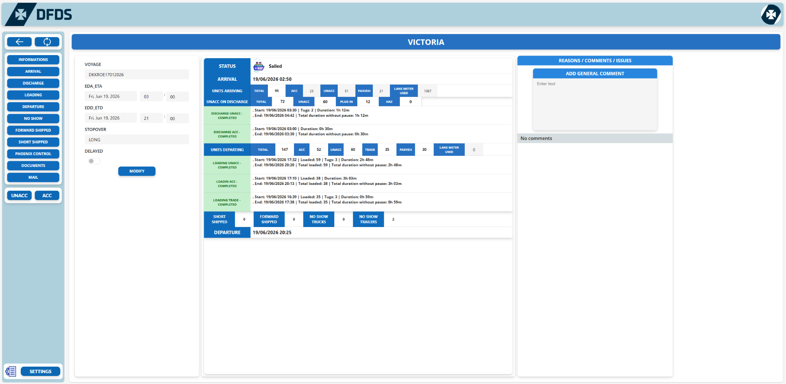
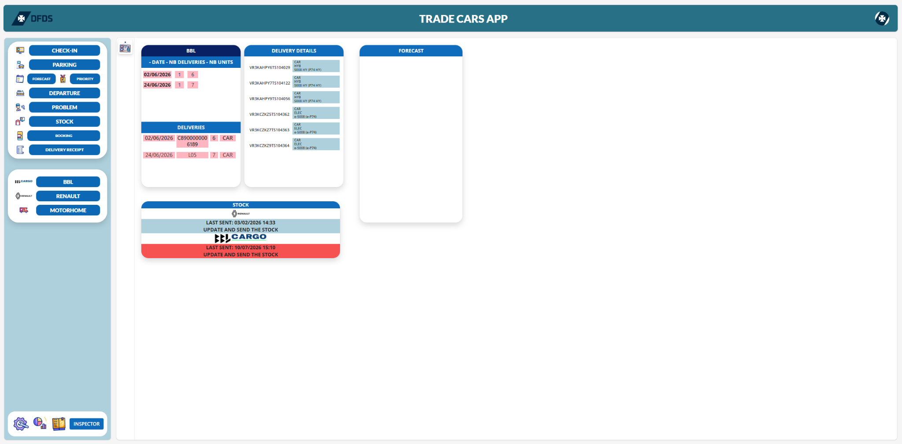
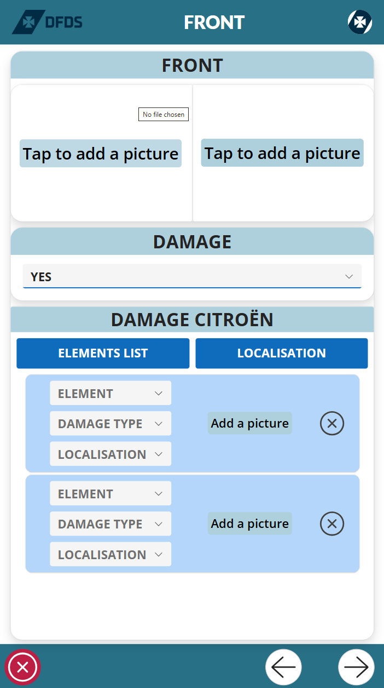
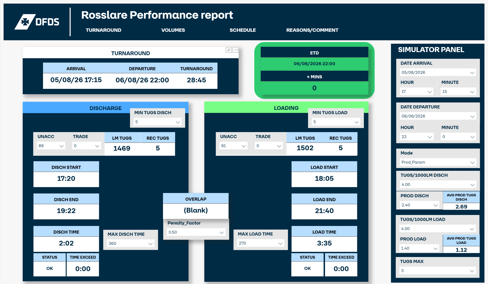
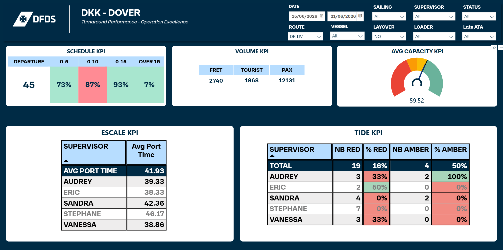
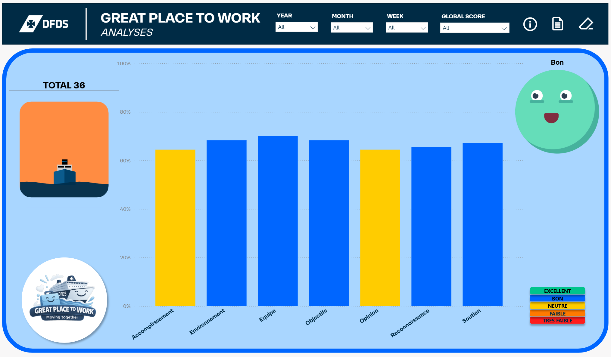
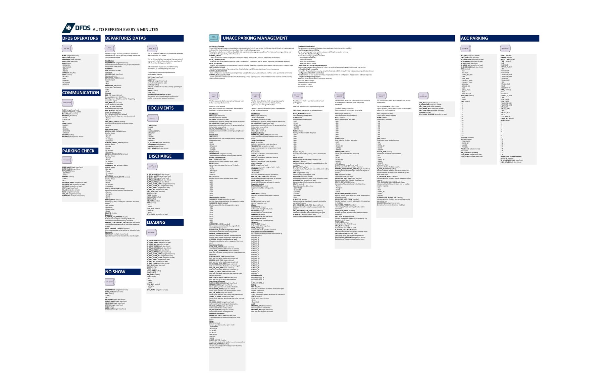
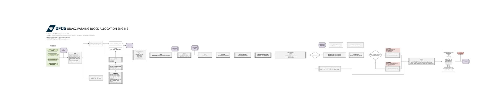
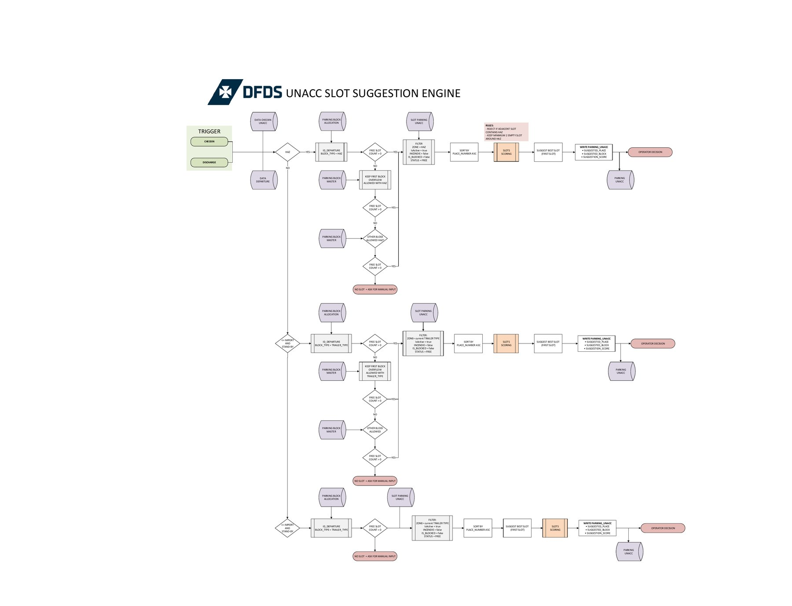
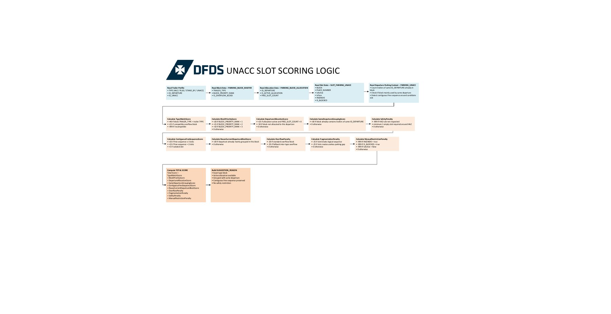

Requested solution
Terminal Operating System
A configurable operational platform with documented architecture and parking intelligence.
Open projectEach case study explains the project origin, stakeholder requirement, my role, architecture, workflows and business value.

A configurable operational platform with documented architecture and parking intelligence.
Open project
Vehicle reception, stock, documentation, departures and automated reporting.
Open project
Guided mobile inspections, CMR assistance, photographs, signatures and damage reporting.
Open project
Operational KPIs, delay investigation and predictive resource simulation.
Open project
Port time, sea time, schedule, volumes, dwell time and team-level performance.
Open project
Anonymous feedback application connected to team-level Power BI analytics.
Open projectI design the data model, business rules, application modules, role management, integrations and automation before translating them into Power Platform solutions.
The Microsoft Visio documentation covers the data architecture, user workflows, parking-allocation engine, slot-suggestion engine, scoring logic, settings, permissions and operational processes.
Operational trailers, check-in records, departures, physical slots, block rules and runtime allocations are separated into dedicated data responsibilities.
Parking capacity is recalculated according to active departures, operational status, priority, occupancy and time to departure.
Suggestions combine type compatibility, allocation availability, grouping, continuity, overflow penalties, fragmentation and dangerous-goods restrictions.
Lifecycle states and timestamps are retained to support operational traceability.
Parking strategy and operational settings can evolve without redesigning the entire application.
Operator, supervisor, deputy and administrator roles control functions, approvals and communication.




Automatic damage reports, operational reports and structured outputs.
Stock reporting, dangerous-goods documentation, pets and operational notifications.
SharePoint, Excel Online and Office Scripts used to structure and distribute operational information.